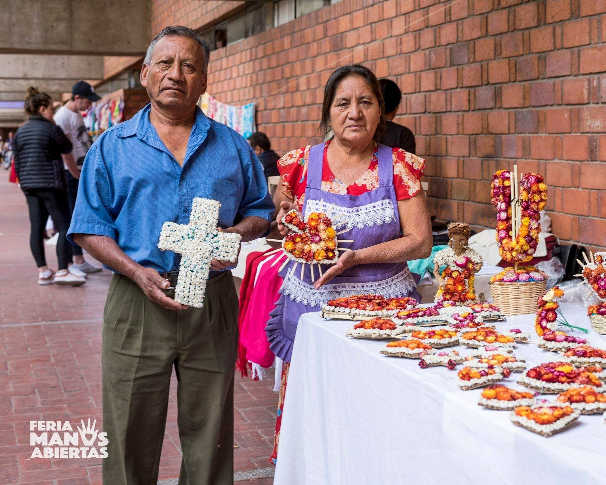
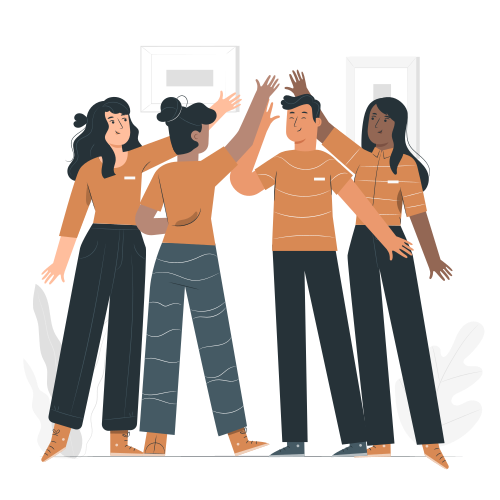

Justicia
Transformamos las relaciones de desigualdad para defender la dignidad y los derechos de los pueblos.
Somos un programa de la Dirección de Incidencia de la IBERO-CDMX que visibiliza realidades y acompaña resistencias de las comunidades indígenas. Nos enfocamos a investigar, educar y promover la autodeterminación de estas comunidades, colaborando con organizaciones y la comunidad universitaria para desarrollar proyectos que representen alternativas sociales y culturales pertinentes.

Contribuir a la transformación de las relaciones de desigualdad, injusticia y violencia que viven los pueblos indígenas y afrodescendientes, trabajando en procesos de investigación, aprendizaje y concepción de alternativas al actual modelo de desarrollo, así como construyendo y participando en espacios de vinculación con miembros de la Comunidad Universitaria, la Compañía de Jesús, organizaciones y comunidades.
Acompañar procesos de autodeterminación de los pueblos, desarrollando proyectos social y culturalmente pertinentes, colaborando en red con la Compañía de Jesús y vinculando a la Comunidad Universitaria con las culturas indígenas.
Transformamos las relaciones de desigualdad para defender la dignidad y los derechos de los pueblos.
Construimos puentes de entendimiento a través de la escucha y el intercambio de saberes interculturales.

Promovemos una distribución justa de oportunidades y recursos, respetando las visiones de cada comunidad.
Acompañamos los procesos comunitarios tejiendo redes de colaboración y compromiso mutuo.